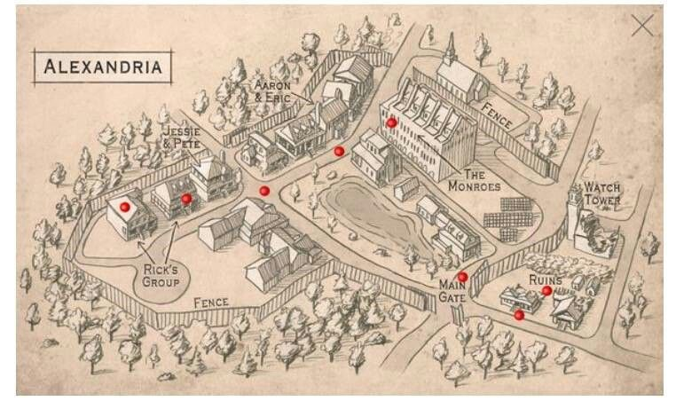
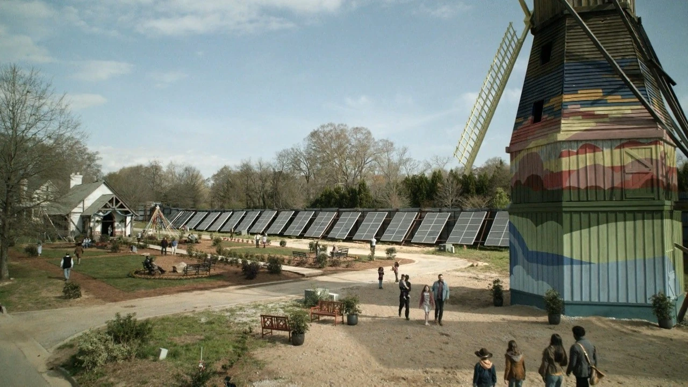

Perimeter Secure — For Now
SAFE ZONE
HOLD THE LINE.
Four walls. A gate. A generator that needs watching. It isn't perfect and it isn't permanent — but tonight, it's home. Keep it that way.

Perimeter Secure — For Now
Four walls. A gate. A generator that needs watching. It isn't perfect and it isn't permanent — but tonight, it's home. Keep it that way.
Everyone who enters agrees. No exceptions. No debate.
01
At the gate, you surrender your weapons. You get them back when you leave. Inside these walls we trust each other — or we practice trusting each other.
02
Cook. Build. Patrol. Tend the garden. There is no passenger in this vehicle. Your contribution keeps the lights on and the walls standing.
03
Concealing a bite is a death sentence for everyone around you. Disclosure is immediate. There is no negotiation on this. There never will be.
04
You do not leave the perimeter alone. Two minimum. Three preferred. Heroics are how we lose people we can't afford to lose.
05
Major decisions — rations, territory, new arrivals — go to the council. One voice doesn't rule here. We've tried that. It ends badly.
06
Whatever else falls away, whatever hard choice gets made — the children are always the last line. If they're safe, we haven't lost yet.
"This place — the way it is — it's not enough. We have to keep moving. Keep building. Or we end up just like the things outside the walls."— Carol Peletier

Know where you are. Know where to run.
Primary entry and exit. Two guards minimum at all times. Strangers are held here for 48 hours before admission is considered.
Medical supplies are rationed. Clean water is stored here. If you're bleeding, come here. If you've been bitten, come here first — then say your goodbyes.
Council access only. Weapons catalogued, maintained, and issued on patrol schedules. No exceptions, no favors.
Our best insurance policy. Whoever tends it keeps people fed. It is the most important patch of dirt within these walls.